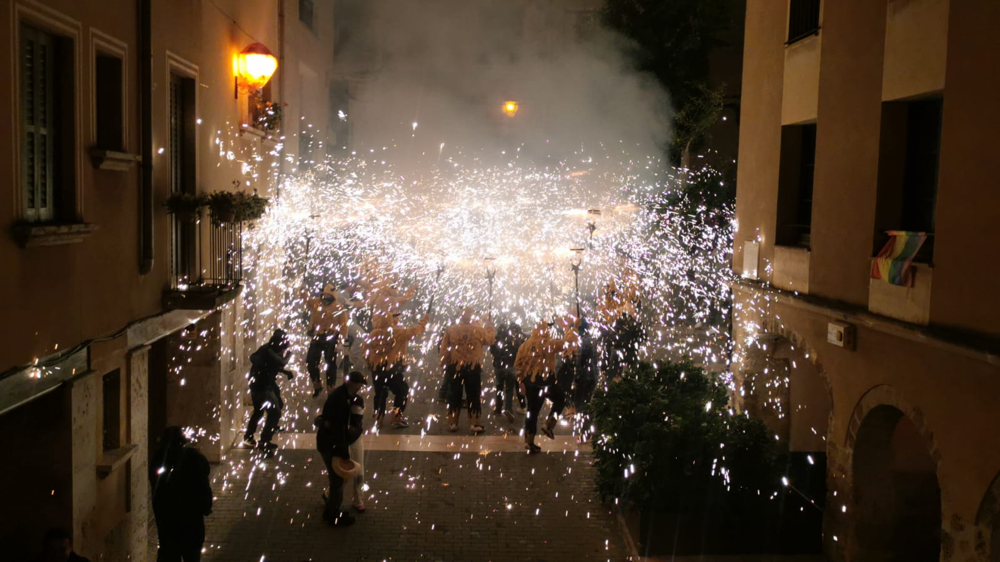
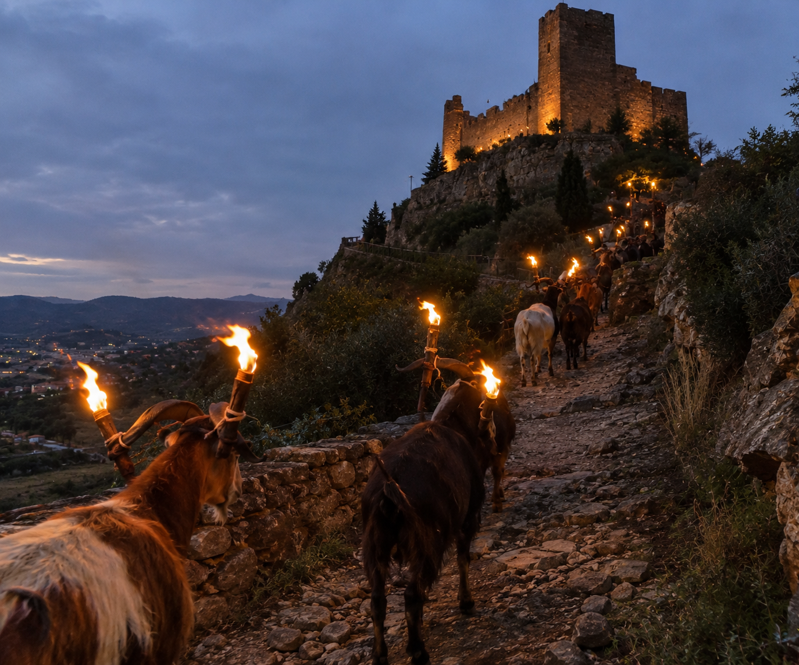

L'ASSOCIACIÓ
Coneix Les Cabres de Sant Procopi
Qui som?
Les Cabres de Sant Procopi és una associació de la Pobla de Claramunt vinculada al món dels focs artificials, la festa i la tradició.
Les Cabres de Sant Procopi és una entitat que es funda l’any 2024 però que reprèn el fil de la llegenda de Sant Procopi, Patró de La Pobla de Claramunt.


La nostra història
Primera llegenda
La primera i més popular llegenda entorn d'aquest castell fa referència a l'ocupació sarraïna d'inicis de l'Edat Mitjana: els invasors s'havien fortificat al castell de "Claramonte", però la població local es va conjurar per foragitar-los amb l'ajuda de sant Procopi, patró de la Pobla, qui organitzà un ramat de cabres i els hi va lligar torxes a les banyes, tot llençant-los de nit muntanya amunt del castell. Els sarraïns, pensant que es tractava de l'embat d'un gran exèrcit cristià, varen emprendre la fugida
Òbviament, el protagonisme de sant Procopi en l'acció delata l'anacronisme d'aquesta història i permet situar la llegenda en un moment que ha de ser posterior a finals del segle XVII -que és quan les relíquies de sant Procopi arribaren a la Pobla i se'l començà a venerar-. Ara bé, tampoc es pot excloure la possibilitat de que la llegenda fos més antiga i el protagonista fos un altre sant o la mateixa Verge de la Llet, que seria llavor substituït amb l'arribada de les relíquies de Procopi.
Segona llegenda
La segona llegenda del castell fa referència a una imatge del Sant Crist feta d'or massís que roman amagada entre els murs de la fortalesa. Aquesta creença va fer que en moments del segle XIX i primera meitat del XX en que el castell va romandre totalment abandonat, joves de la Pobla pugessin al castell a colpejar les parets per trobar el llegendari tresor.
Foc i tradició
Una part important de la nostra identitat són els focs artificials i les activitats relacionades amb la cultura popular i la festa.
Activitats
Descobreix les activitats de l'associació.
📅Calendari
Consulta les properes dates.